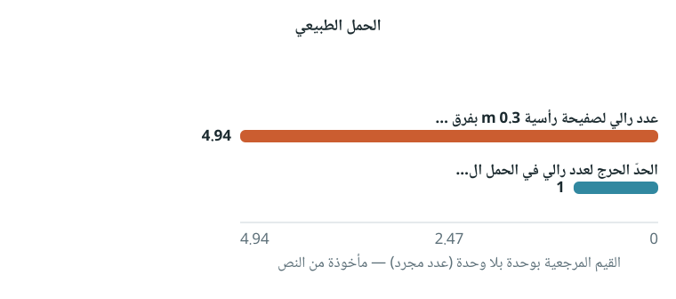

الحمل الطبيعي
Natural Convection
انتقال حرارة بين سطح ومائع تحرّكه فروق الكثافة الناتجة عن التسخين نفسه، بلا مضخة أو مروحة؛ يُوصف بأعداد Gr وRa وNu.
الحمل الطبيعي انتقال حرارة بين سطح ومائع متحرك، وحركة المائع ناتجة عن فروق كثافة بسبب انتقال الطاقة نفسه لا عن جهاز خارجي. يعرّفه Janna بهذا اللفظ في الفصل الأول، ويصفه Holman بأنه يُلاحظ من حركة المائع نتيجة تغيّرات الكثافة الناشئة عن التسخين. والمسألة الكلاسيكية صفيحة رأسية ساخنة: تدفق صفحي قد يصير مضطرباً عند حدّ غراشوف، ولها حل تشابهي وحل طبقة حدية. ويُقاس الحمل الطبيعي تجريبياً بجهاز من ثلاثة أقسام بسخانات حماية تعزل الفقد الطرفي، ويعطي Janna مثالاً على معامل حمل مقاس: h̄ = 14.2 BTU/(hr·ft²·°R). ولأن معامل الحمل يتغيّر مع الهندسة والوسيط، لا يُنقل رقم تجربة إلى حالة أخرى بلا تحويل وحدات وإعادة حساب عدد نسلت.
كيف تعمل الظاهرة؟
المحرك فرق كثافة داخل مجال جاذبية. عند تسخين السطح يقلّ كثافة المائع القريب منه، فينشأ فرق ضغط بين العنصر الساخن والبارد عند الارتفاع نفسه مقداره ρgβΔT فيصعد العنصر الساخن. وتعاكس اللزوجة هذا الصعود فتتكون طبقة حدية سرعتها صفر عند السطح وصفر عند المائع الساكن، ولها سرعة عظمى داخلها. وتزداد سماكة الطبقة مع الارتفاع لأن المائع يتسارع على مسافة أطول، فتنخفض مشتقة الحرارة عند السطح ويقلّ h محلياً؛ ولهذا يُستعمل متوسط على الطول. ولا يوجد جهاز يفرض السرعة، فالعدد الذي يضبط المسألة هو نسبة قوى الطفو إلى حاصل ضرب اللزوجة والانتشار الحراري، أي Gr وPr.
العلاقة بالأرقام
المسار: Gr = gβΔT L³/ν² ثم Ra = Gr·Pr ثم Nu من ارتباط تشرشل–تشو للصفيحة الرأسية ثم h = Nu·k/L. مثال: هواء عند T_f = 300 K، β = 1/300 = 3.33×10⁻³ K⁻¹، ν = 1.589×10⁻⁵ m²/s وν² = 2.525×10⁻¹⁰، Pr = 0.707، k = 0.0263 W/(m·K)، L = 0.3 m، ΔT = 20 K. البسط: 9.81 × 3.33×10⁻³ × 20 × 0.3³ = 9.81 × 3.33×10⁻³ × 20 × 0.027 = 0.01766، وبالقسمة على 2.525×10⁻¹⁰ يعطي Gr = 6.99×10⁷، ثم Ra = 6.99×10⁷ × 0.707 = 4.94×10⁷. وفي تشرشل–تشو: Ra^(1/6) = 19.16، والمقام [1+(0.492/0.707)^(9/16)]^(8/27) = 1.193، فيكون Nu = [0.825 + 0.387×19.16/1.193]² = [0.825 + 6.216]² = 49.5، ومنه h = 49.5 × 0.0263/0.3 = 4.34 W/(m²·K). وللتحويل: 14.2 BTU/(hr·ft²·°R) × 5.678 = 80.6 W/(m²·K).
مفاهيم متقاربة
الخلط الأول حساب Re للحمل الطبيعي: لا سرعة معلومة فيه، والمعنى الوحيد للسرعة سرعة محلية مشتقة، فالمقياس Gr لا Re. الثاني استعمال ارتباط حمل قسري في مسألة طفو: النتيجة تخطئ خطأً كبيراً لأن h القسري يتبع السرعة بأس 0.8 وh الطبيعي يتبع ΔT بأس 0.25، فحساسيتهما للمتغيّرات مختلفة. الثالث الخلط بين حرارة السطح وحرارة الغشاء في تقييم الخصائص: الحمل الطبيعي يُقيَّم عند T_f = (T_s + T∞)/2 لأن الطبقة تعبر هذا المدى كاملاً، واستعمال خصائص T∞ يخطئ في ν وβ وPr معاً. الرابع الخلط بين الحمل الطبيعي والتهوية الناتجة عن الطفو في مبانٍ محصورة، حيث تكون المسألة حمل مختلطاً بقيود هندسية لا طبقة حدية حرة.
حدود التطبيق
يضعف النموذج حين يفقد أحد فروضه: إذا كان فرق الحرارة صغيراً جداً قارب الحمل على التوصيل وصار Nu قريباً من الواحد؛ وإذا كان الفضاء محصوراً بين جدارين تقاربت الطبقتان وتغيّر الارتباط؛ وإذا وُجد تيار خارجي ولو ضعيف صار الحمل مختلطاً؛ وإذا كان المائع قريباً من نقطة حرجة أو من تغيّر طوري لم تصلح خصائص ثابتة ولا β = 1/T؛ وإذا كان السطح في فضاء واسع بلا جدران صار الإشعاع شريكاً معتبراً ووجب فصله قبل نسبة النتائج إلى الحمل وحده. وارتباطات الصفيحة الرأسية لا تُطبَّق على أسطوانات أو كرات بلا تحويل هندسي معتمد.

| الكمية | القيمة | المصدر |
|---|---|---|
| معامل حمل طبيعي مقاس بجهاز ثلاثي الأقسام بسخانات حماية | 14.2 BTU/(hr·ft²·°R) | [1] |
| القيمة نفسها بوحدات النظام الدولي | 80.6 W/(m²·K) | [1] |
| عدد رالي لصفيحة رأسية 0.3 m بفرق 20 K في الهواء | 4.94×10⁷ بلا وحدة (عدد مجرد) | [2] |
| عدد نسلت ومعامل الحمل في المثال نفسه | 49.5 / 4.34 بلا وحدة / W/(m²·K) | [2] |
| الحدّ الحرج لعدد رالي في الحمل الطبيعي على صفيحة رأسية | 1×10⁹ بلا وحدة (عدد مجرد) | [2] |
المصادر
استشهد بهذا المصطلح
الصيغتان مبنيتان من بيانات الصفحة نفسها: العنوان والتاريخ ورابط النسخة المنشورة.
الحمل الطبيعي — Natural Convection. (2026). ديوان المعرفة — انفراد. https://infiradev.com/diwan/terms/term-natural-convection.html
@misc{term-natural-convection2026,
title = {الحمل الطبيعي},
titleaddon = {Natural Convection},
howpublished = {{ديوان المعرفة — انفراد} — مرجع علمي عربي},
year = {2026},
url = {https://infiradev.com/diwan/terms/term-natural-convection.html},
urldate = {2026-11-26},
note = {مراجعة علمية: hermes — مراجعة آلية بالتكليف 2026-11-26}
}
راجعه: hermes — مراجعة آلية بالتكليف 2026-11-26 · 2026-11-26 · آخر تحديث 2026-11-26